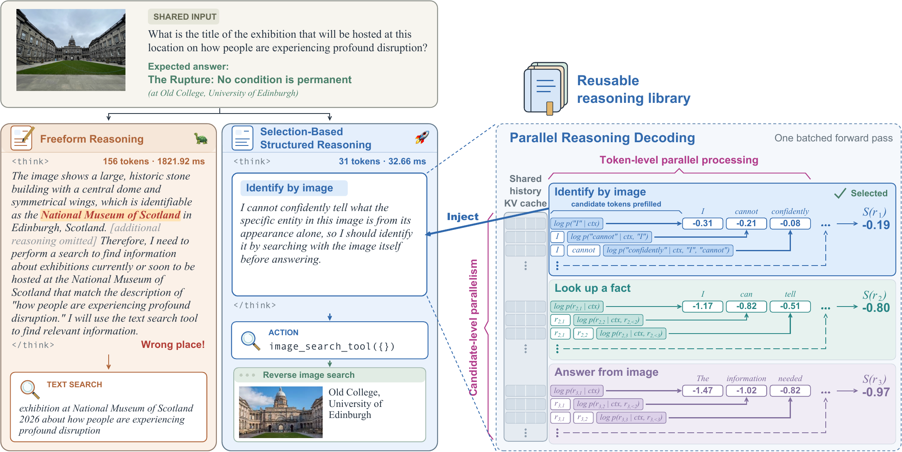
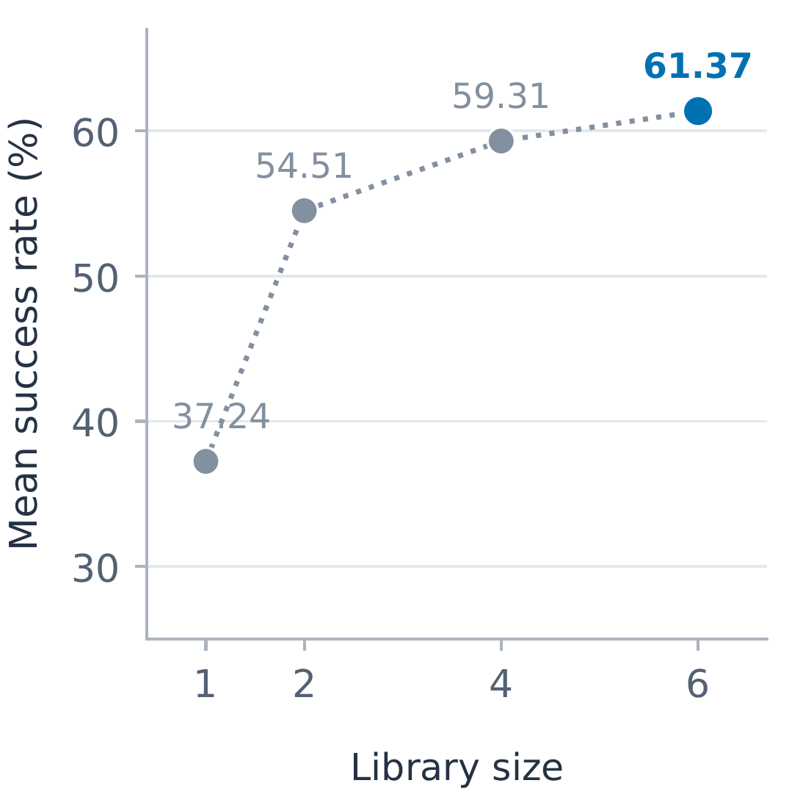
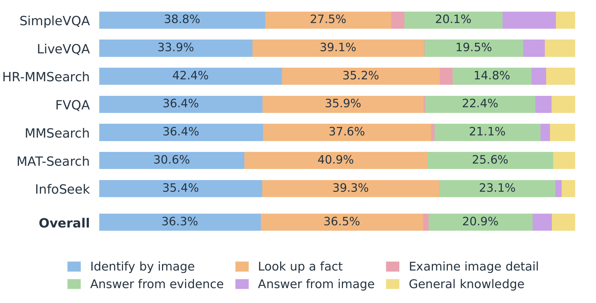

Abstract
Multimodal agents commonly generate freeform reasoning before each action. For small models, limited model capacity can result in lengthy reasoning that provides little useful guidance for action generation while incurring substantial inference cost. We introduce Selection-based Structured Reasoning (SSR), a framework that reformulates reasoning as selection among pre-specified, reusable natural-language candidates. At each turn, the model selects a candidate based on its likelihood given the current context, without an auxiliary task head. Teacher-forced prefilling computes token likelihoods concurrently within and across candidates using a shared context KV cache. Across seven multimodal search benchmarks, 2B and 4B models, and multiple reinforcement learning objectives and supervised fine-tuning, SSR achieves competitive task performance while reducing per-turn reasoning latency by over 90% and total per-question model inference latency by 28–54%.
Selection-Based Structured Reasoning
A small library of reusable reasoning. A context-specific action at every turn.
Search questions differ in their entities, images, and answers, but often share the same information needs: identify an unfamiliar object, look up a missing fact, inspect an image detail, or answer from the available evidence. SSR represents these recurring decisions as reusable natural-language reasoning candidates.
At each turn, the language model scores every candidate given its current interaction history. The selected reasoning is inserted into the context to guide action generation. The action remains specific to the question: the model generates the search query, crop coordinates, or final answer.

1. Score in parallel
Teacher-force the full candidate texts. Compute token likelihoods concurrently within each candidate and across candidates.
2. Select the reasoning
Use length-normalized likelihoods to sample a candidate, or choose the highest-scoring candidate at inference.
3. Generate and act
Append the selected text, generate an action, and execute it. Add the observation to the history and repeat until an answer or stopping condition.
Parallel reasoning decoding
For a candidate $r_i$ with $K_i$ tokens, SSR uses its length-normalized conditional log-likelihood:
We use $\alpha=1$ by default. For selection temperature $\tau>0$, the scores define a categorical policy:
The model then generates the action from $p_\theta(\cdot\mid h_t,r_i)$. Scoring and action generation share the same parameters and system prompt; no auxiliary classification head is needed.
Pre-specified candidate tokens remove the sequential dependency of generating a freeform reasoning trace. With fixed model dimensions and idealized parallel reductions, the reasoning computation has depth
Here, $H$ is the history length, $L$ the generated freeform reasoning length, $N$ the candidate count, and $K_{\max}$ the longest candidate. This characterizes parallel dependency depth; measured latency is reported below.
One reasoning library, seven benchmarks
The experiments use six manually written candidates shared across all benchmarks. Each describes a general information need and the corresponding next step.
Hover over an entry or tap it to read the full reasoning candidate.
Joint training for selection and action
SSR supports both supervised fine-tuning and reinforcement learning. SFT combines a categorical loss for selecting the target reasoning with the token-level action loss:
For GRPO-style training, the inserted reasoning contributes one categorical importance ratio, while generated action tokens retain their usual token-level ratios:
Group-normalized rewards provide the advantages. The clipped objective weights reasoning selection by $\gamma^{\mathrm{RL}}_{\mathrm{reason}}$ and applies reference-policy KL regularization to generated action tokens. SSR can be trained directly with RL without an SFT warm start, and is also compatible with GSPO and SAPO. Algorithm 2 specifies the grouped GRPO update with detached competitor scores.
Competitive Performance, Lower Latency
We evaluate Qwen3-VL 2B and 4B agents on seven multimodal search benchmarks with a shared harness for reverse-image search, text search, and image cropping. Training uses VisualProbe, DeepEyes, and FVQA-train, with outcome and format rewards for RL.
Multimodal search performance
SSR reaches 61.37% average success at 4B, comparable to the strongest reported trained 4B baseline in the paper (61.25%). At 2B, SSR reaches 51.26%, close to the zero-shot Qwen3-VL-8B agent’s 51.33%.
| Model | Size | MMSearch | HR-MMSearch | FVQA-test | SimpleVQA | LiveVQA | MAT-Search | InfoSeek | Average |
|---|---|---|---|---|---|---|---|---|---|
| MMSearch-R1* | 4B | 53.80 | 25.50 | 67.20 | 68.50 | 50.60 | 78.00 | 60.00 | 57.66 |
| SenseNova-MARS* | 4B | 44.05 | 24.67 | 57.19 | 65.55 | 43.06 | 78.67 | 48.40 | 51.65 |
| TAPO + GRPO | 4B | 54.97 | 33.11 | 65.56 | 68.31 | 54.05 | 82.00 | 58.85 | 59.55 |
| TAPO + GSPO | 4B | 60.82 | 31.48 | 66.61 | 70.98 | 56.14 | 83.33 | 59.40 | 61.25 |
| TAPO + SAPO | 4B | 56.73 | 31.48 | 67.17 | 71.27 | 55.36 | 81.33 | 59.95 | 60.47 |
| SSR (ours) | 4B | 61.40 | 30.16 | 70.22 | 71.08 | 57.19 | 78.67 | 60.90 | 61.37 |
| SSR (ours) | 2B | 51.18 | 17.06 | 61.16 | 61.83 | 51.54 | 62.59 | 53.44 | 51.26 |
Trained 2B/4B agents. All models were trained for one epoch. Success rate (%), averaged across seven benchmarks. * Reproduced results. The highlighted rows are SSR.
Consistent efficiency across training objectives
SSR reduces mean reasoning latency by over 90% across all tested objectives. It improves average success over freeform GRPO at both model sizes, matches SFT, and shows modest decreases under GSPO and SAPO.
| Training objective | Size | Success (%) ↑ | Reasoning Latency / Turn (s) ↓ | Model Latency / Question (s) ↓ | Throughput (tokens/s) ↑ |
|---|---|---|---|---|---|
| GRPO · freeform | 4B | 58.65 | 0.896 | 5.456 | 72.7 |
| GRPO · SSR | 4B | 61.37 (+4.6%) | 0.061 (-93.2%) | 2.514 (-53.9%) | 3029.9 (+4070.2%) |
| GSPO · freeform | 4B | 60.45 | 0.939 | 5.195 | 71.9 |
| GSPO · SSR | 4B | 58.60 (-3.1%) | 0.063 (-93.3%) | 3.706 (-28.7%) | 2526.2 (+3414.6%) |
| SAPO · freeform | 4B | 61.26 | 1.113 | 6.145 | 69.4 |
| SAPO · SSR | 4B | 60.46 (-1.3%) | 0.060 (-94.6%) | 2.862 (-53.4%) | 3215.3 (+4535.0%) |
| SFT · freeform | 4B | 54.55 | 0.770 | 5.308 | 70.9 |
| SFT · SSR | 4B | 54.57 (+0.0%) | 0.062 (-91.9%) | 3.318 (-37.5%) | 2567.0 (+3520.5%) |
| GRPO · freeform | 2B | 49.98 | 0.902 | 4.153 | 87.2 |
| GRPO · SSR | 2B | 51.26 (+2.6%) | 0.053 (-94.1%) | 2.125 (-48.8%) | 3302.6 (+3687.9%) |
Parenthetical percentages show relative changes from the paired freeform model. Success is measured on the full evaluation sets. Latency profiling uses 100 sampled questions per benchmark on an NVIDIA H100 with SGLang. Model latency includes prefill, reasoning, and action generation across the full trajectory; tool execution and judge time are excluded. Effective throughput counts all scored candidate tokens for SSR and generated reasoning tokens for freeform.
Faster and more predictable reasoning
On the profiling subset, SSR achieves the highest success rate among the compared methods. Mean reasoning latency is 61 ms and the 95th percentile is 71 ms. Mean model latency is 2.514 seconds per question, about 28% below Sketch-of-Thought, the fastest baseline on this metric.
| Method | Subset success (%) ↑ | Reasoning Latency / Turn (s) ↓ | Model Latency / Question (s) ↓ | Throughput (tokens/s) ↑ | ||
|---|---|---|---|---|---|---|
| Mean | p95 | Mean | p95 | |||
| MMSearch-R1-4B | 51.59 | 1.235 | 1.892 | 5.601 | 7.502 | 73.8 |
| SenseNova-MARS-4B | 49.57 | 0.960 | 1.533 | 5.289 | 10.397 | 72.5 |
| Chain-of-Draft | 54.06 | 0.416 | 0.798 | 3.657 | 6.616 | 69.9 |
| Sketch-of-Thought | 56.07 | 0.543 | 1.054 | 3.487 | 7.048 | 71.7 |
| Efficiency-reward RL | 56.28 | 0.756 | 1.273 | 4.638 | 8.675 | 68.9 |
| Probe & Prefill | 55.49 | 0.890 | 1.564 | 5.219 | 11.369 | 65.8 |
| SSR (ours) | 58.36 | 0.061 | 0.071 | 2.514 | 4.620 | 3029.9 |
All success rates in this table refer to the profiling subset, rather than the full evaluation sets. Latencies are in seconds; p95 is the 95th percentile.
What Makes Selection Work?
Score the meaning of the whole candidate
Scoring full reasoning text achieves 61.37% average success, compared with 58.98% when scoring only a candidate index. Both variants insert the same selected text before action generation; the difference is whether candidate selection uses the reasoning tokens themselves.
Autoregressive generation can reproduce library entries after an SFT warm start, but retains sequential reasoning generation. Without SFT, the autoregressive variant produces freeform reasoning despite the prompt and format reward. SSR enforces the reasoning library through selection.
| Reasoning method | MMSearch | HR-MMSearch | FVQA-test | SimpleVQA | LiveVQA | MAT-Search | InfoSeek | Average |
|---|---|---|---|---|---|---|---|---|
| Entire reasoning | 61.40 | 30.16 | 70.22 | 71.08 | 57.19 | 78.67 | 60.90 | 61.37 |
| Index only | 60.82 | 22.30 | 67.56 | 69.99 | 55.56 | 77.33 | 59.30 | 58.98 |
| Autoregressive · with SFT | 61.40 | 29.84 | 69.22 | 69.10 | 56.97 | 72.00 | 61.55 | 60.01 |
| Autoregressive · without SFT | 60.23 | 33.11 | 67.28 | 68.41 | 54.67 | 79.33 | 58.60 | 60.23 |
A small library supports different information needs
Average success rises from 37.24% with a single generic candidate to 61.37% with six candidates. Moving from one generic candidate to two choices—answer or use a tool—already yields a 17.27 percentage point gain.


SimpleVQA most often selects “Answer from image,” while HR-MMSearch has the highest selection rate for “Examine image detail.” The generated action type matches the selected candidate’s expected action type in 99.9% of turns. These measurements show operational consistency and different selection patterns across tasks.
Pseudocode
Inference with SGLang, and grouped GRPO training.
Inference details
The running context $h_t$ contains the complete interaction before turn $t+1$. Each candidate is a nonempty token sequence including its reasoning delimiters; inputs include the required chat delimiters and assistant prefixes.
Action sampling parameters $\eta$ specify the token limit (e.g., max_new_tokens=8192), temperature, and stopping conditions, with one completion per input. The selection temperature $\tau$ is independent of these action settings.
While $h_t$ stores tokens, the persistent SGLang engine owns the KV cache of computed model states. KV tensors are not endpoint arguments or return values. New observations enter the cache when the next model call processes them. For multimodal inputs, the adapter supplies matching image_data per request row and tracks expanded token positions; those payloads are omitted below.
SGLang accepts variable-length candidate sequences without caller padding. Setting logprob_start_len to $L_t-1$ leaves the final $K_i$ input-token log-probabilities aligned with candidate $r_i$. Candidates use causal attention and do not attend to one another.
Algorithm 1 · SSR inference using SGLang’s generate interface
- h_0\gets s\Vert q; K_i\gets|r_i| for i=1,\ldots,N \triangleright context tokens; candidate lengths
- g_0\gets\{\texttt{"max\_new\_tokens"}:0\} \triangleright prefill-only sampling parameters
- \begin{aligned} \pi_\theta.\texttt{generate}(&\texttt{input\_ids}=s,\\ &\texttt{sampling\_params}=g_0,\\ &\texttt{return\_logprob}=\texttt{False}) \qquad \triangleright\text{ warm the system-prompt cache} \end{aligned}
- for t=0,\ldots,T_{\max}-1 do
- L_t\gets|h_t|; X\gets[h_t\Vert r_i]_{i=1}^N \triangleright N variable-length token sequences
- \begin{aligned} Y\gets\pi_\theta.\texttt{generate}(&\texttt{input\_ids}=X,\\ &\texttt{sampling\_params}=g_0,\\ &\texttt{return\_logprob}=\texttt{True},\\ &\texttt{logprob\_start\_len}=L_t-1) \qquad \triangleright\text{ list of }N\text{ responses} \end{aligned}
- for i=1,\ldots,N do
- D_i\gets Y[i-1].\texttt{input\_token\_logprob}[-K_i:]
- Verify [d[1]\text{ for }d\in D_i]=r_i \triangleright record: (log-probability, token ID, text)
- \ell_i\gets[d[0]\text{ for }d\in D_i]; verify all entries are finite \triangleright |\ell_i|=K_i
- S_{t,i}\gets K_i^{-\alpha}\sum_{j=0}^{K_i-1}\ell_i[j] \triangleright candidate scores S_t\in\mathbb R^N
- end for
- if \tau=0 then
- i_t\gets\min\arg\max_i S_{t,i}
- else
- i_t\sim\operatorname{Categorical}(\operatorname{softmax}(S_t/\tau))
- end if
- z_t\gets r_{i_t}; u_t\gets h_t\Vert z_t \triangleright append selected reasoning to current context
- \begin{aligned} A\gets\pi_\theta.\texttt{generate}(&\texttt{input\_ids}=u_t,\\ &\texttt{sampling\_params}=\eta,\\ &\texttt{return\_logprob}=\texttt{False}) \end{aligned}
- a_t\gets A.\texttt{output\_ids}; h_t^+\gets u_t\Vert a_t \triangleright action tokens; extended context
- if a_t is a valid final answer then
- return (h_t^+,\texttt{answer})
- else if a_t is not a valid tool request then
- return (h_t^+,\texttt{invalid-output})
- end if
- (o_t,\delta_t)\gets\mathcal H.\texttt{execute}(a_t) \triangleright observation tokens;
continueor error - h_{t+1}\gets h_t^+\Vert o_t \triangleright observation includes the next assistant prefix
- if \delta_t\neq\texttt{continue} then
- return (h_{t+1},\delta_t)
- end if
- end for
- return (h_{T_{\max}},\texttt{turn-limit})
Grouped GRPO training details
Each iteration collects a fresh minibatch of rollout groups and takes one optimizer step. Training uses clipping threshold $\epsilon>0$, reasoning-selection weight $\gamma^{\mathrm{RL}}_{\mathrm{reason}}\geq0$, reference-policy KL weight $\beta\geq0$, and reward-standard-deviation floor $\delta>0$.
During rollout logging, set return_logprob=True on Algorithm 1’s action-generation request. Logged behavior probabilities and current action likelihoods must use the same sampling distribution. Each trajectory retains its turns, final context, observations, media references, and stopping status, allowing $f_{\mathrm{reward}}$ to score unsuccessful and truncated trajectories.
Algorithm 2 · Grouped GRPO with detached competitor scores
- while the training budget remains do
- \theta_{\mathrm{old}}\gets\operatorname{stopgrad}(\operatorname{copy}(\theta))
- Synchronize \pi_{\mathrm{old}} to \theta_{\mathrm{old}}; invalidate its weight-dependent caches
- Sample m questions X\sim\mathcal D^m; \mathcal M\gets[\,] \triangleright current rollout minibatch
- for each question x\in X do
- for g=1,\ldots,n do
- Collect d_g with Algorithm 1 using \pi_{\mathrm{old}} and question x, with turn logging
- R_g\gets f_{\mathrm{reward}}(x,d_g) \triangleright reward, including non-answer stopping cases
- end for
- \mu\gets n^{-1}\sum_g R_g; \sigma\gets\sqrt{n^{-1}\sum_g(R_g-\mu)^2}
- for g=1,\ldots,n do
- d_g.\texttt{adv}\gets\operatorname{stopgrad}((R_g-\mu)/\max(\sigma,\delta)); append d_g to \mathcal M
- end for
- end for
- J\gets0 \triangleright accumulated surrogate; |\mathcal M|=mn trajectories
- for each trajectory d\in\mathcal M do
- for each turn v\in d.\texttt{turns} do
- (h,z,a,i)\gets(v.\texttt{h},v.\texttt{z},v.\texttt{a},v.\texttt{index}); K\gets|z|; w\gets z\Vert a
- b\gets[\log p_\theta(w[k]\mid h\Vert w[:k])]_{k=0}^{|w|-1} \triangleright teacher forcing; gradients enabled
- s_{\mathrm{sel}}\gets K^{-\alpha}\sum_{j=0}^{K-1}b[j] \triangleright current selected-candidate score
- u\gets\operatorname{stopgrad}(v.\texttt{scores}/\tau); u[i-1]\gets s_{\mathrm{sel}}/\tau \triangleright N selector logits
- \widetilde b^{\mathrm{reason}}\gets u[i-1]-\operatorname{LSE}(u)
- \rho^{\mathrm{reason}}\gets\exp(\widetilde b^{\mathrm{reason}}-v.\texttt{logq}) \triangleright one scalar ratio
- \rho^{\mathrm{action}}\gets\exp(b[K:]-v.\texttt{logp}) \triangleright |a| token ratios, elementwise
- J\gets J+\gamma^{\mathrm{RL}}_{\mathrm{reason}}\ell_\epsilon(\rho^{\mathrm{reason}},d.\texttt{adv})+\sum_k\ell_\epsilon(\rho^{\mathrm{action}}[k],d.\texttt{adv})
- end for
- end for
- \widehat{\mathcal K}\gets reference-policy KL estimate on generated action positions in \mathcal M
- \mathcal L\gets-J/|\mathcal M|+\beta\widehat{\mathcal K} \triangleright scalar loss; trajectory average
- \mathcal O.\texttt{zero\_grad}(); \mathcal L.\texttt{backward}(); \mathcal O.\texttt{step}() \triangleright one update from \mathcal M
- end while
- return \theta
Turn records and differentiable updates
Each turn stores the context h, selected reasoning z, action a, candidate index, and rollout candidate scores. It also stores the selected-candidate log-probability
and the action-token log-probabilities logp from output_token_logprobs, in token order. Verify their token IDs against the action and retain exactly $|a_t|$ finite values.
Recompute likelihoods using the differentiable model $p_\theta$; SGLang rollout outputs are detached. Only the selected candidate’s score receives gradients, through both the softmax numerator and denominator. Teacher-forced turns may be batched with causal attention and true-length masks. Action losses and reference-policy KL apply only to generated action positions; prompts, inserted reasoning, and observations remain visible as context. Exclude padding from attention and loss.
Reasoning in a Reusable Space
Small search agents may not need to reason over the full language space at every step. By organizing recurring reasoning into a compact library and selecting through parallel scoring, SSR achieves competitive multimodal search performance with substantially lower model inference latency.